1) Mantı
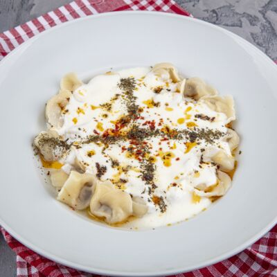Manti is a Turkish dumpling dish similar to Italian tortellini. It is made of a small dough casing filled with a mixture of ground meat (usually beef or lamb), onion, and spices. The filled dumplings are boiled or steamed, and served with a tomato sauce, melted butter, and sometimes sprinkled with red pepper flakes and melted sheep cheese.
2) Köfte
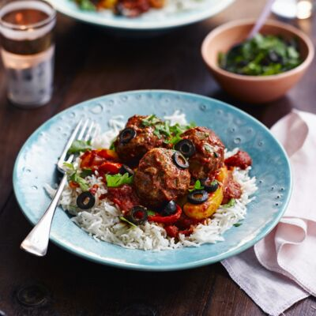Köfte is a type of meatball dish that is popular in Middle Eastern and Turkish cuisines. It is typically made from ground beef or lamb, mixed with spices, onions, and bulgur or breadcrumbs, and shaped into small balls. Köfte can be grilled, fried, or baked, and are often served as an appetizer or main dish with rice, vegetables, or in a sandwich. There are many variations of köfte, and different regions of the Middle East and Turkey have their own unique recipes and preparations.
3) Lahmacun
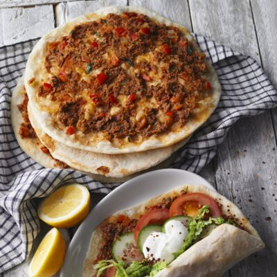Lahmacun is a thin, round, and crispy Turkish flatbread, similar to a pizza. It is traditionally topped with a mixture of minced lamb or beef, tomatoes, onions, peppers, herbs, and spices, then baked in a very hot oven. The finished lahmacun is typically served rolled up with fresh herbs, vegetables, and a squeeze of lemon juice. It is considered a popular fast food in Turkey and is often eaten as a snack or light meal.
4) Menemen
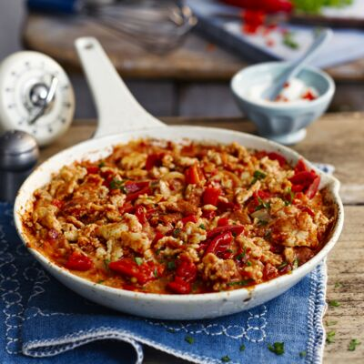Menemen is a traditional Turkish breakfast dish consisting of scrambled eggs cooked with tomatoes, peppers, onions, and spices. It is usually made with fresh vegetables, and sometimes includes additional ingredients like sausage or cheese. The dish is typically served hot with bread or Turkish pide, and is a popular way to start the day in Turkey.
5) Şiş Kebap

Shish Kebab is a popular dish originating from the Middle East, typically made of marinated meat (such as lamb, beef, chicken, or fish) skewered and grilled, served with vegetables and rice or bread. It's a popular dish in Turkish and Mediterranean cuisine, and variations exist in other countries as well.
6) Karnıyarık
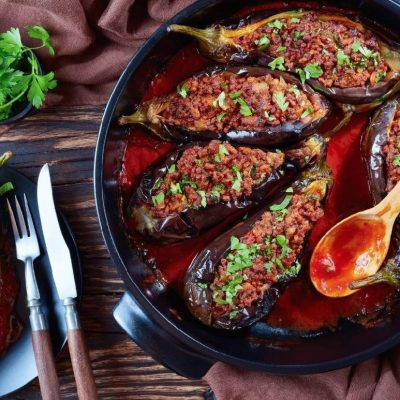Karniyarik is a traditional Turkish dish made of eggplants stuffed with a mixture of minced meat, onions, garlic, and tomatoes, and then baked in the oven. It is a popular dish in Turkish cuisine and is typically served as a main course, garnished with parsley and accompanied by bread, rice, or bulgur.
7) İskender Kebab

Iskender kebab is a type of kebab dish originating from the Turkish city of Bursa. It consists of thin slices of marinated lamb or beef, served over pide bread, topped with melted butter, tomato sauce, and yogurt, and often sprinkled with paprika and dried chili flakes. Iskender kebab is a popular dish in Turkish cuisine, known for its rich and flavorful taste.
8) Mücver

Mucver is a traditional Turkish dish made of grated zucchini mixed with flour, eggs, and herbs such as mint, dill, and parsley, then shaped into small patties and fried. Mucver can be served as a snack or a main dish and is often accompanied by yogurt or a tomato sauce. It's a popular vegetarian dish in Turkish cuisine, known for its fresh and light flavor.
9) Kuzu Tandir

Kuzu Tandir is a traditional Turkish dish made of slow-roasted lamb on a spit, flavored with herbs and spices such as cumin, paprika, and garlic. It is usually served with rice, bread, and a variety of side dishes such as grilled vegetables or salad. Kuzu Tandir is a popular dish in Turkish cuisine, known for its juicy and tender meat, and is often served on special occasions or at traditional restaurants.
10) Pide
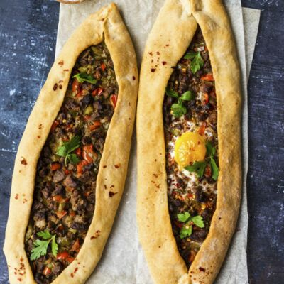Pide is a traditional Turkish flatbread similar to a thin, round pizza. It is typically topped with a variety of ingredients such as cheese, meat, vegetables, or eggs and then baked in a wood-fired oven. Pide is a staple of Turkish cuisine, often served as a main dish or as a snack. There are many variations of pide, with different toppings and shapes, but the traditional oval-shaped pide with cheese and eggs is a popular choice.
11) Kokoreç

Kokoreç is a traditional Turkish street food made of sheep intestines wrapped around a skewer and grilled over hot coals. It is typically served with a variety of spices and herbs such as red pepper, cumin, and parsley, and may also be served with bread or rice. Kokoreç is a popular dish in Turkish cuisine, known for its bold and spicy flavor.
12) Çiğ Köfte

Cig Kofte is a traditional Turkish dish made of raw beef, bulgur, spices, and herbs. The ingredients are mixed together and shaped into small balls, and then served with lettuce leaves or pita bread for wrapping. Cig Kofte is a popular dish in Turkish cuisine, known for its bold flavor and texture, and is often served as a snack or appetizer.
13) Pilav
.jpg)
Pilav, also known as rice pilaf, is a popular dish in Turkish cuisine made by cooking rice in a seasoned broth or sauce. Pilav can be served plain or with a variety of ingredients such as vegetables, meat, or nuts and dried fruit. It is a staple dish in Turkish cuisine, often served as a side dish or as a main dish with a variety of toppings. There are many variations of pilav in Turkish cuisine, with different ingredients and cooking methods, but it is known for its fluffy and flavorful rice.
14) Yaprak Sarma

Risotto is an Italian dish made by cooking a starchy, short grain rice like arborio with stock until it becomes creamy. When you serve it on a plate, risotto should spread out into a silky, spoonable pool. Because it's made with just a few ingredients, there is a lot of emphasis on the cooking technique: slowly ladling in warm stock to a pan full of rice, stirring until the stock is absorbed, ladling in some more stock and repeating. The dish is often finished with butter and freshly grated Parmesan to really kick up the creamy flavor, although the rice can be a neutral background to whatever you have on hand in the fridge-whether it's a bit of leftover bacon or some gorgeous fresh green peas.
15) Dolma
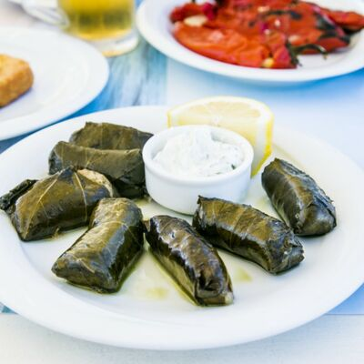Dolma is a traditional dish originating from the Middle East and Mediterranean regions, made of stuffed vegetables such as grape leaves, peppers, eggplants, or tomatoes. The stuffing typically consists of rice, herbs, and spices, and may also include ingredients such as meat or nuts. Dolma is a popular dish in Turkish cuisine, known for its flavorful and hearty taste, and is often served as an appetizer or main dish, accompanied by yogurt or bread.
16) İmam Bayıldı

Imam Bayildi is a traditional Turkish dish made of whole eggplants stuffed with a mixture of onions, tomatoes, garlic, and herbs such as parsley and mint. The stuffed eggplants are then baked in the oven until soft and tender, resulting in a flavorful and hearty dish. Imam Bayildi is a popular dish in Turkish cuisine, often served as a main dish or as a side dish, and is known for its savory and slightly sweet taste.
17) Durum
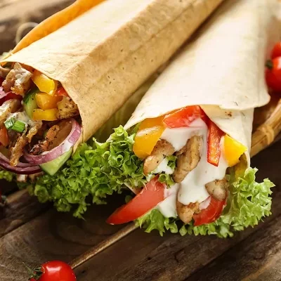Durum is a type of Turkish wrap made from a thin, pliable flatbread known as "yufka". The flatbread is filled with a variety of ingredients such as marinated meat, vegetables, cheese, or herbs, then rolled and grilled. Durum is a popular street food in Turkish cuisine, known for its convenient and delicious flavor, and is often eaten on-the-go as a quick and satisfying meal.
18) Kabak Mücveri

Kabak Mucveri is a traditional Turkish dish made of grated zucchini mixed with flour, eggs, and herbs such as mint, dill, and parsley, then shaped into small patties and fried. Kabak Mucveri is a popular vegetarian dish in Turkish cuisine, known for its fresh and light flavor. It can be served as a snack or a main dish and is often accompanied by yogurt or a tomato sauce. It's a variation of the traditional Turkish dish called "mucver."
19) Şakşuka
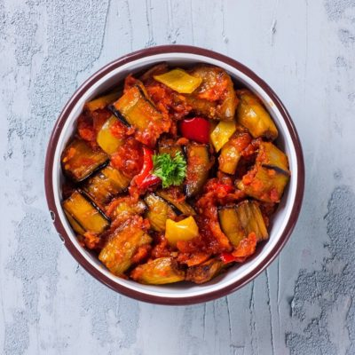Saksuka is a traditional Turkish dish made of fried eggplants, peppers, onions, and tomatoes, simmered in a sauce made from garlic, tomato paste, and spices such as paprika and cumin. The dish is then finished with a drizzle of olive oil and sprinkled with herbs such as parsley or mint. Saksuka is a popular vegetarian dish in Turkish cuisine, known for its hearty and flavorful taste, and is often served as a main dish or as a side dish, accompanied by bread or rice.
20) Kumpir
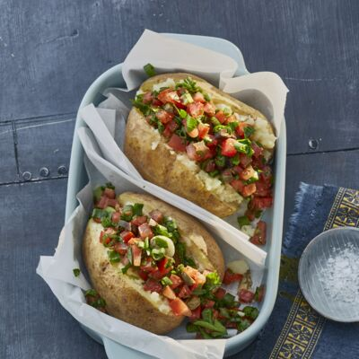Kumpir is a traditional Turkish dish made of baked potatoes that are split open, mashed, and filled with a variety of ingredients such as cheese, butter, mayonnaise, corn, olives, pickles, and sausage. Kumpir is a popular street food in Turkish cuisine, known for its hearty and filling flavor, and is often served as a quick and satisfying meal. Kumpir is often consumed as a fast food snack in Turkey and is widely enjoyed by locals and tourists alike.
21) Hamsili Pilav

Hamsili Pilav is a traditional Turkish dish made of rice cooked with black olives and served with fish. The fish used in this dish is usually anchovy, although other types of fish can also be used. The dish is flavored with spices such as parsley, dill, and black pepper, and is often garnished with lemon wedges. Hamsili Pilav is a popular coastal dish in Turkish cuisine, known for its savory and slightly salty taste, and is often served as a main dish, accompanied by vegetables or a salad.
22) Hunkar Begendi

Hunkar Begendi is a traditional Turkish dish made of a creamy puree of eggplant and milk, served as a side dish with lamb or beef stew. The eggplant puree is seasoned with spices such as garlic and paprika, and is often garnished with parsley or melted cheese. Hunkar Begendi is a popular dish in Turkish cuisine, known for its smooth and velvety texture and its rich and flavorful taste. It is often served at special occasions or as a part of a traditional Turkish meal.
23) Kisir
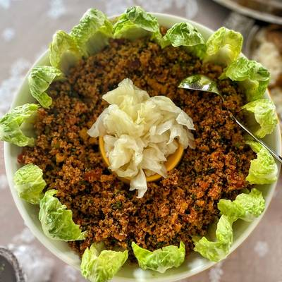Kisir is a traditional Turkish salad made of bulgur wheat, tomatoes, parsley, mint, onions, and spices such as cumin and paprika. The ingredients are mixed together and moistened with a dressing made of lemon juice, olive oil, and pomegranate molasses. Kisir is a popular vegetarian dish in Turkish cuisine, known for its fresh and flavorful taste, and is often served as a side dish or as a main dish, accompanied by vegetables or bread. Kisir is also commonly consumed as a fast food snack in Turkey and is widely enjoyed by locals and tourists alike.
24) Kapuska
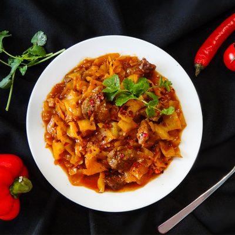Kapuska is a traditional Turkish stew made of cabbage, tomatoes, onions, and green peppers, simmered in a tomato sauce and flavored with spices such as paprika and cumin. The dish is often served with rice or bulgur and is a popular vegetarian dish in Turkish cuisine, known for its hearty and filling flavor. Kapuska is a common dish in Turkish households and is often made during the winter months to warm up and satisfy the appetite. It is also a common dish served at family gatherings and special occasions.
25) Gozleme
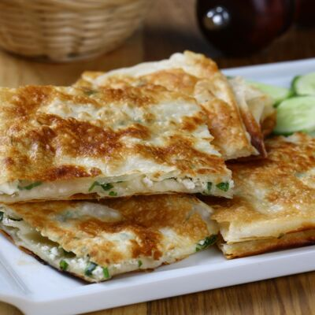Gozleme is a traditional Turkish flatbread made of hand-rolled phyllo dough filled with ingredients such as cheese, spinach, potatoes, or ground meat, and then grilled over a griddle. Gozleme is a popular street food in Turkish cuisine, known for its crispy texture and savory taste. It is often consumed as a quick and satisfying meal and is widely enjoyed by locals and tourists alike. Gozleme can also be found at outdoor markets and food festivals in Turkey, where it is enjoyed as a traditional and hearty snack.